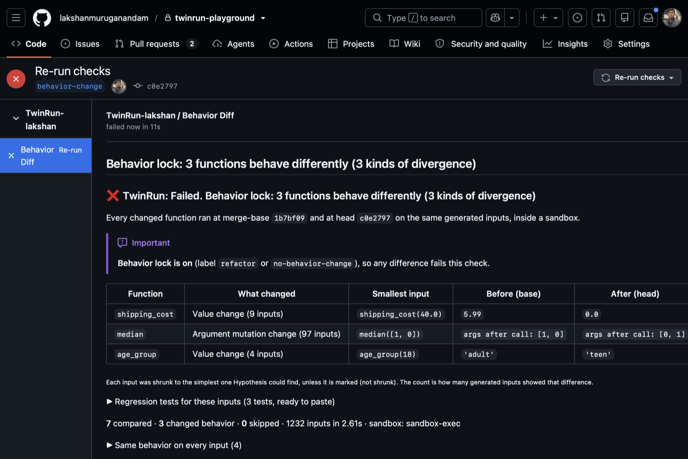

See what a pull request does, not just what it says.
TwinRun runs every changed function at the merge-base and at the head on the same generated inputs, inside a sandbox. It shows reviewers the smallest input where they disagree, plus a regression test to keep.
One table instead of a guessing game
This PR changed < to <= and lowered one constant. Both are easy to miss in a diff. TwinRun found the exact inputs.
| Function | What changed | Smallest input | Before (base) | After (head) |
|---|---|---|---|---|
shipping_cost | Value change | shipping_cost(40.0) | 5.99 | 0.0 |
age_group | Value change | age_group(18) | 'adult' | 'teen' |
Regression tests TwinRun attached (ready to paste)
from lib.users import age_group
def test_age_group_value_change():
# Pins the merge-base behavior. If the change is intended, update the expectation.
assert age_group(18) == 'adult' # head: 'teen'How it works
Five steps run on every push. A typical PR finishes in seconds.
- 01
AST diff
Finds functions whose syntax tree changed, or whose module constants changed. Reformatting, comments and docstrings are ignored.
- 02
Generate inputs
Hypothesis strategies come from type hints, defaults and real call sites. Every constant is probed at c−1, c and c+1.
- 03
Run both, sandboxed
Each side runs in its own locked-down process with no network, no writes outside a temp dir, and hard time limits.
- 04
Group & shrink
Differences are grouped by kind and shrunk to the simplest input that still shows them.
- 05
Report
A check run and one PR comment that updates in place on every push, with regression tests to paste.
Measured, not claimed
Every number is reproducible from the repository and re-checked by CI on macOS and Linux.
- 20 / 20behavior changes caught in the benchmark
- 0 / 10false alarms on pure refactors
- 21 / 21generated tests pass on base and fail on head
- ≈ 8 sfor a 50-function pull request
Behavior lock: prove a refactor is a refactor
Add the refactor or no-behavior-change label, and any difference fails the check. Make Behavior Diff a required check, and "just a cleanup" can't quietly change behavior.
| Lock label | Difference found | Check |
|---|---|---|
| No | No | Passed |
| No | Yes | For review |
| Yes | No | Passed |
| Yes | Yes | Failed |

Set up in 60 seconds
You need Python 3.12 and uv. create-app uses GitHub's manifest flow, so you only click "Create GitHub App" once.
git clone https://github.com/lakshanmuruganandam/twinrun.git && cd twinrun
uv sync
uv run twinrun create-app # click "Create GitHub App", then install it on a repo
npx smee-client --url "$(grep SMEE_URL .env | cut -d= -f2)" --target http://localhost:8000/webhook &
uv run twinrun serve # open a PR and watch the Behavior Diff check appearTry it without GitHub: uv run twinrun analyze path/to/base path/to/head --label refactor
Honest limits
- Python only. It works best on module-level functions, static methods and class methods with built-in argument types.
- Skipped, and the report says why: instance methods, custom-class parameters, unhinted parameters with no call site to learn from, and I/O-heavy code.
- No difference means no difference on the inputs tried. That's strong evidence, not a proof.
- Code is imported with TwinRun's interpreter. Modules with third-party imports it doesn't have are skipped, and the error is shown.